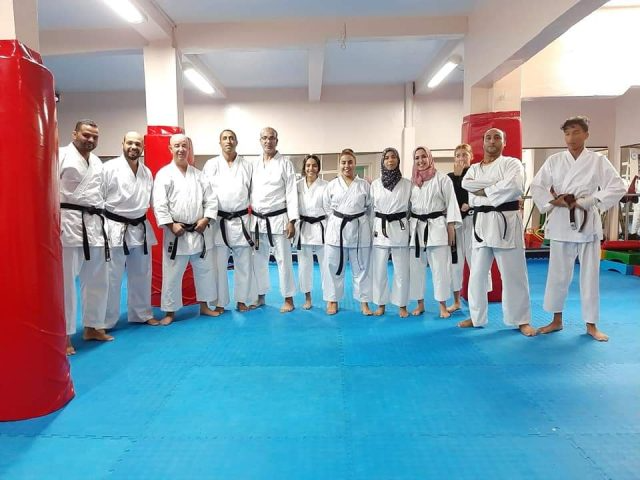

Le karaté :
Le karaté est un art martial japonais qui utilise les mains, les pieds,
les genoux et les coudes comme armes. C'est un sport défensif avec la haute moralité des
joueurs et le principe strict : le Karaté est créatif ou non.
la Fondation :

L'origine du karaté est née au Japon, les triangles frappés en Chine, pour
apprendre les arts martiaux, en particulier le wushu, où ils ont développé les chinois. Le
karaté est un art martial local des arts martiaux chinois
De cette période d'investissement à cette période, le début du Japon a voulu s'unifier dans
la période Meiji et renverser la domination féodale dans tout le Japon. Certaines régions du
Japon doivent être unifiées par la force, et parmi ces régions se trouve l'archipel de
Ryoko, dans lequel il réside, Okinawa, qui apparaît dans un nouveau champ aux Émirats arabes
unis, et le décollage a commencé.Les forces de samouraï sont utilisées par le gouvernement
japonais pendant le règne de l'empereur. Les Funakshi japonais voulaient les îles
principales et le monde extérieur.
L'étiquette :
Le professeur de karaté a une ceinture noire ou plus, qui est un
diplôme supérieur des niveaux PLE
Le mot Karaté est un mot japonais composé de deux syllabes (kara blanc) et (teh,
signifiant main ou poing), de sorte qu'il devient inexistant dans le nom. Certains
outils agricoles comme armes de défense.
Uniforme de joueur de karaté
La manche est médiatisée entre le coude, le poignet et la veste. Il existe des ceintures
de couleur selon le niveau du stagiaire, et le nombre de ceintures varie d'un pays à
l'autre.Cet uniforme est principalement issu du sport du judo, et la couleur blanche de
l'uniforme exprime des intentions pures et rejette les mauvaises pensées.
La Musculation :
est un sport où le but est de solliciter ses muscles par le biais de
charges additionnelles ou d'exercices au poids de corps afin de tonifier, de développer
et de renforcer sa masse musculaire. La plupart des pratiquants de musculation soulèvent
des poids pour la construction musculaire ou pour brûler des graisses, mais il est utile
de savoir que ce
sport est également largement utilisé pour augmenter les capacités physiques telles que
la force,
l'endurance et la résistance. En effet, la majeure partie des sportifs issus des sports
de
combat, des sports fonctionnels, des sports collectifs et même de l'athlétisme
pratiquent la
musculation afin de taper plus fort, de courir plus vite, plus longtemps, et pour éviter
les blessures .
la prise de masse :
La prise de masse est un processus qui implique un entraînement
ciblé
et
une alimentation
aidant
le corps à accumuler de la masse musculaire.
En prise de masse, on privilégie les exercices de base, les charges lourdes, des temps
de
récupération longs et une alimentation riche en calories issues des protéines, des
glucides
et
des lipides.
La prise de masse s'adresse généralement aux personnes ectomorphes (très maigres) ou aux
compétiteurs en bodybuilding et fitness qui souhaitent booster leur progression.
La construction musculaire :
La construction musculaire, c'est un travail spécifique sur le volume,
sans prise de graisse.
On peut aussi appeler ce processus "prise de masse sèche". Le but de la construction
musculaire, c'est de prendre du muscle de qualité sans passer par une alimentation riche
en
calories afin de conserver un taux de masse grasse le plus bas possible.
Ce processus de développement musculaire de qualité a le gros avantage de pouvoir être
suivi
sur le long cours, et il s'agit véritablement du meilleur moyen de conserver la forme et
une
bonne définition musculaire toute l'année.